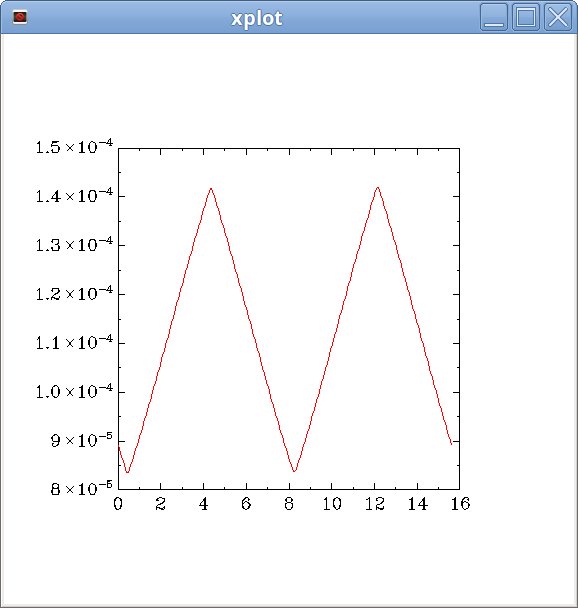

Example 3¶
Lattice/Twiss matching by using matchutils module of beamline
package for free-electron laser facility.
Module matchutils provides classes/functions to handle issues about
numerical simulation of free-electron laser (FEL),
including Twiss matching, to optimize an FEL, at the simulation stage.
In this example, we will tune the FODO lattice of an high-gain harmonic generation (HGHG) FEL, to figure out the best Twiss parameters when the electron beam enters into the undulator line, such matched Twiss parameter could be used as the lattice matching goal of an matching application.
Here is the code for demostration:
#!/usr/bin/python
# -*- coding: utf-8 -*-
from beamline import parseLattice, ParseParams, BeamMatch, FELSimulator
def test():
testParse = ParseParams('rad.in', 'rad.lat')
aw0 = testParse.getUndulatorParameter()
xlamd = testParse.getUndulatorPeriod()
unitlength = testParse.getUndulatorUnitlength()
xlamds = testParse.getFELwavelength()
gamma0 = testParse.getElectronGamma()
emitx = testParse.getElectronEmitx()
imagl = testParse.getChicaneMagnetLength()
idril = testParse.getChicaneDriftLength()
ibfield = testParse.getChicaneMagnetField()
"""
print("aw0 = %.3f" % aw0 )
print("xlamd = %.3f" % xlamd )
print("xlamds = %.3e" % xlamds)
print("gamma0 = %.3f" % gamma0)
print("emitx = %.3e" % emitx )
print("imagl = %.3f" % imagl )
print("idril = %.3f" % idril )
print("ibfield= %.3f" % ibfield)
print("unit = %.3f" % unitlength)
print parseLattice('fullat.hghg')
"""
qf, qd = -1, 2
testMatch = BeamMatch('mod.in', 'rad.in', 'mod.lat', 'rad.lat',
'newmod.in', 'newrad.in', 'newrad.lat', qf, qd)
if testMatch.matchCalculate():
testMatch.matchPerform()
#testMatch.matchPrintout()
fel = FELSimulator()
fel.run()
fel.postProcess()
print fel.getMaxPower()
if __name__ == '__main__':
test()
- The FEL physics related files:
- Wrap it up:
Create
ParseParams()instance to get needed parameter values;- Create
BeamMatch()instance to resolve matching issues: - Invoke
mathCalculate()to figure out the Twiss parameter required; run()andpostProcess()methods ofFELSimulatorto produce the simulation and get output files;genesis 1.3is used to handle the FEL simulation.
- Invoke
- Create
- Tips about the post processing with the
genesis 1.3generated files: For steady-stat (single slice) simulation mode, use this shell script (name:
getssdata.sh)to get well-formated output data by columns:tempdir=/tmp/tmp.$$ outfile="rad.out" awk '/z\[m\]/,/current/' ${outfile} | tr -d '\r' | sed "/^$/d;/[*,=,cur]/d;s/^[ ,\t]*//;1s/^/#/" > ${tempdir}/zaq awk '/current/,/\$/' ${outfile} | tr -d '\r' | sed "1d;/^$/d;s/^[ ,\t]*//" > ${tempdir}/outdata paste ${tempdir}/zaq ${tempdir}/outdata
Show the beam size variation along undulator:
getssdata.sh rad.out | awk '{print $1,$13}' | graph -T X -C
{kind=link}
Todo
Integrate FEL physics manipulation, like Twiss matching into online modeling framework, and develop online-modeling optimization modules.